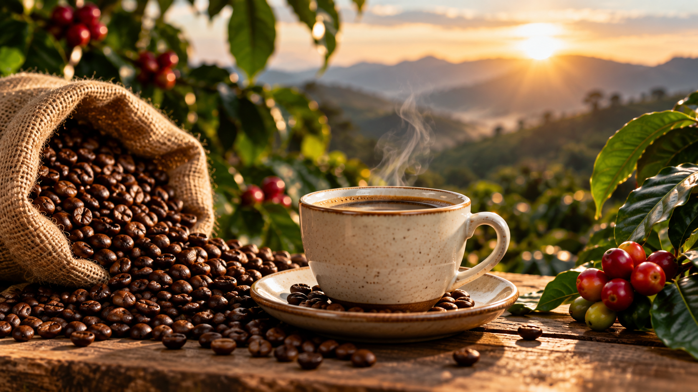
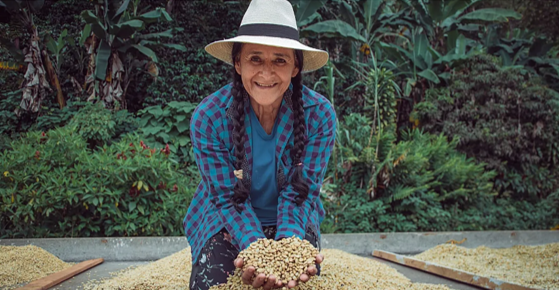
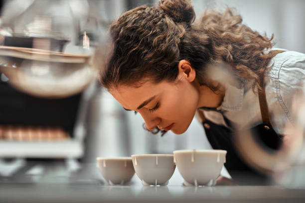
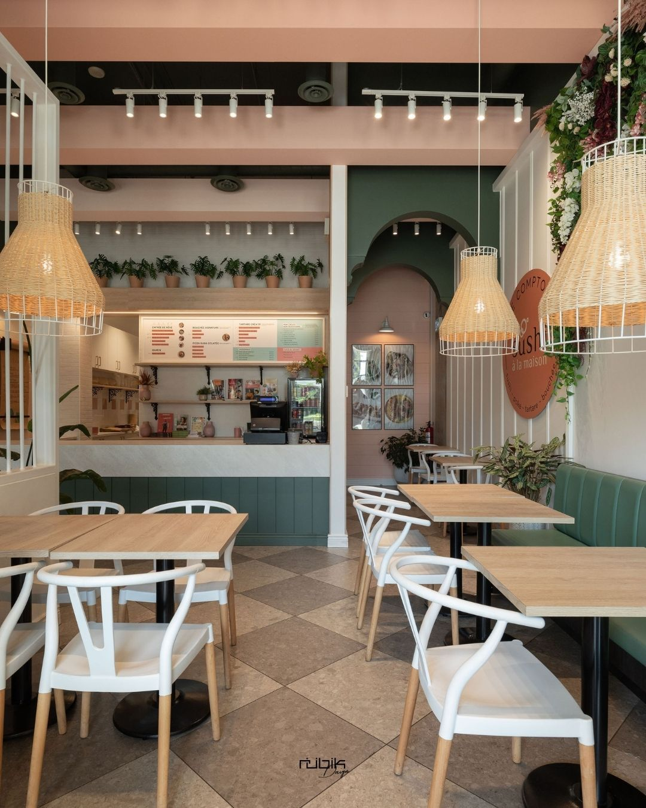
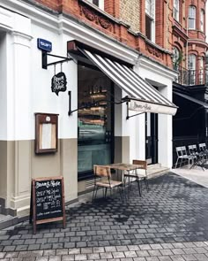
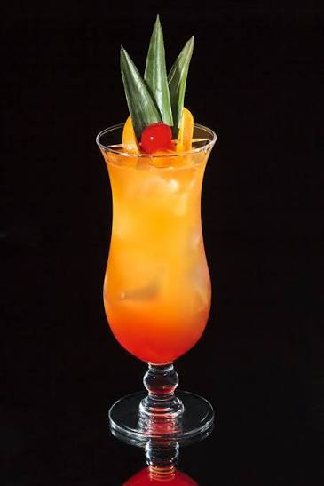
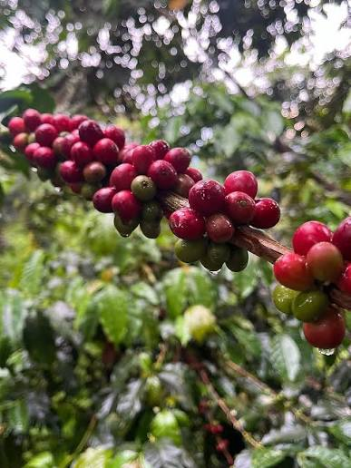

EL CAFÉ QUE NOS MUEVE
Una colección especial que inspira
Un café de Cafetano que disfrutas hoy nace de un esfuerzo en conjunto
de tres generaciones cafetaleras.
Somos productores de café hondureño de calidad. De nuestro amor por este maravilloso
grano nace la excelencia detrás de cada taza que disfrutas.

La excelencia es nuestra misión
El café producido en nuestra plantación se exporta a distintos países. Ofrecemos una
calidad excepcional en todas nuestras cafeterías Cafetano.
Cafetano ofrece una variedad de productos basados en recetas inspirados tanto en la
cocina Italiaana como hondureña. El diseño eclético y original de nuestras cafeterías crea
un ambiente cómodo, unico y acogedor que sabemos que disfrutarás.
Cafés de calidad analizados diariamente
Hogar de los mejores cafés
En Cafetano, contamos con un equipo altamente cualificado de tostadores, cuppers
y
baristas para deleitar a todos los amantes del café.
Utilizamos una amplia variedad de métodos de extracción para crear tu taza de café perfecta.

Nuestra amplia variedad de métodos de café ha sido cuidadosamente seleccionada para ofrecer la mejor experiencia de café perfecta.

Nuestro café se tuesta a la perfección para conseguir el sabor óptimo cuando llega a tu taza

Cafetano cuenta con tostadores y degustadores altamente capacitados y apasionados para crear cafe de la mas alta calidad para ti.
el cafe es el oro del hombre común y, al igual que el oro, transmite a cada persona una sensación de lujo y noblezaMás información





Cafetano en Instagram
Ofrecemos la increible taza de café "Golden Zotz" para saborear despacio y para
disfrutar el último sorbo.
Sigue el equipo para nuevos eventos, productos y más.